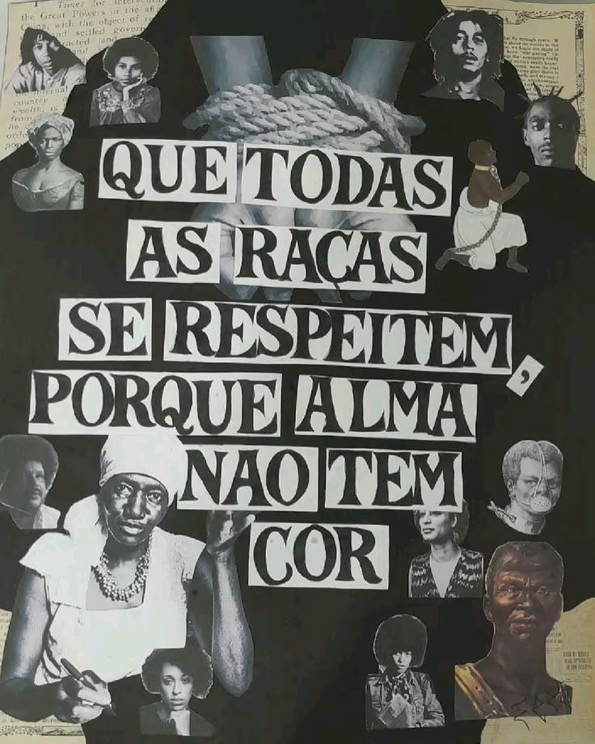
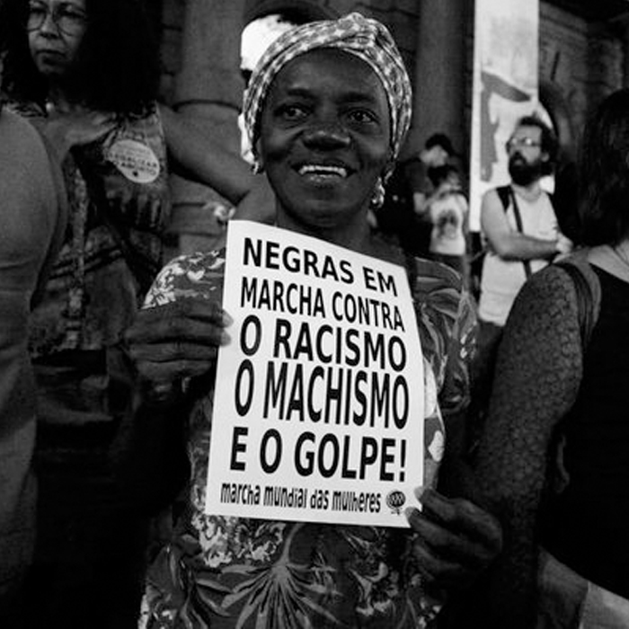
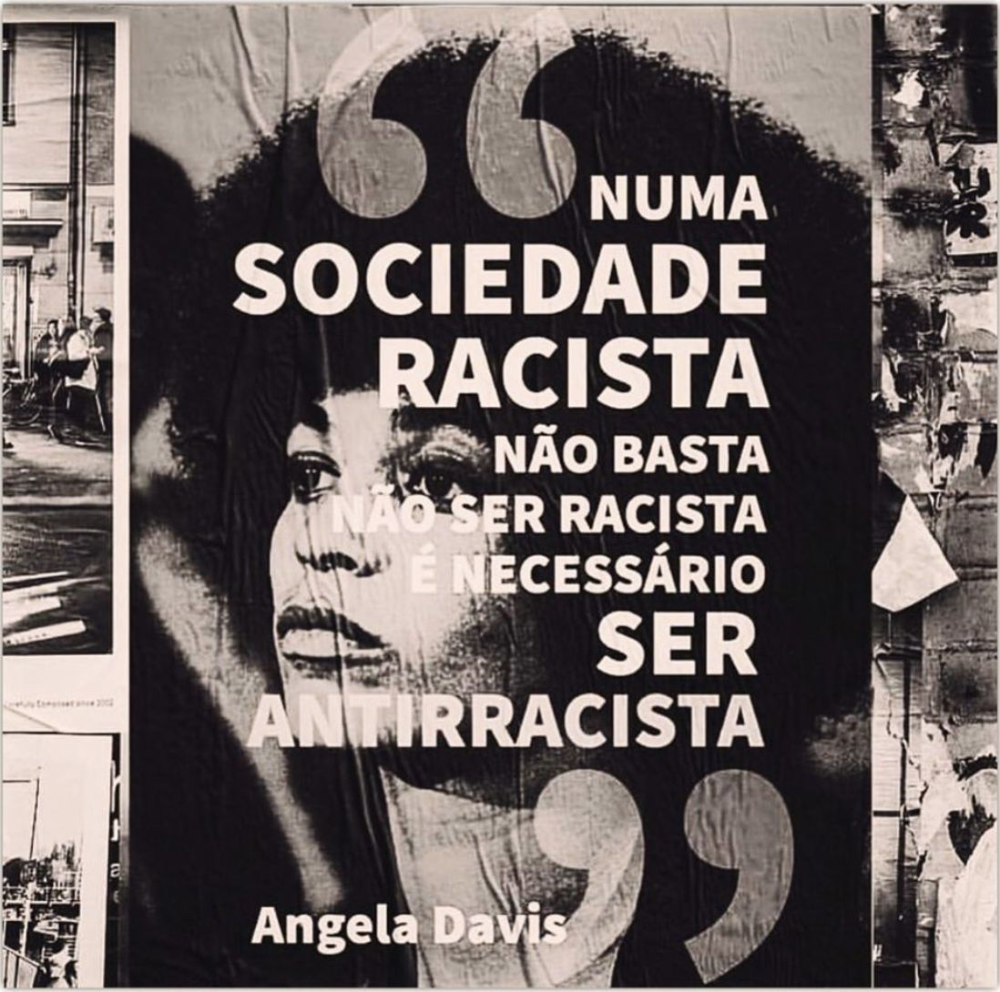

Cultural
Desvalorização de saberes, religiões e manifestações não brancas.
Individual
Agressões diretas, ofensas e negação de acesso (Crime de Ódio).
Estrutural
Desigualdade enraizada nas bases econômicas, sociais e políticas.
Desvalorização de saberes, religiões e manifestações não brancas.
Agressões diretas, ofensas e negação de acesso (Crime de Ódio).
Desigualdade enraizada nas bases econômicas, sociais e políticas.
Clique em uma das abas abaixo para entender cada manifestação do racismo:
Baseia-se na falsa ideia de que uma cultura é superior a outra, desvalorizando manifestações, religiões (como o racismo religioso contra cultos de matriz africana), saberes, sotaques ou traços de povos não brancos.

O racismo direto (ou individual) ocorre quando uma pessoa ou grupo agride física ou verbalmente outra pessoa por conta de sua raça, ou nega seu acesso a locais e serviços. No Brasil, essa prática é crime e possui punições previstas pela Lei nº 7.716/1989.

É a naturalização do racismo dentro das bases da sociedade. Ele não depende apenas de uma intenção individual, mas faz parte do funcionamento histórico das instituições, da economia, da política e da justiça, gerando desigualdade contínua.
